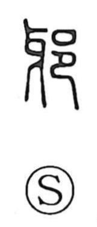

邪

Kun: yokoshima | On: ja
evil ・ wrong ・ wicked
Explanation
In early script, 邪 is a phono-semantic compound. It sets 牙, the large curved tusk of an animal, as the phonetic, a graph that also suggests something bent or askew. The companion element 邑 depicts a walled settlement or fortress. Taken together they evoke a city wall that fails to make a true square—an oblique, out-of-true structure—and from this image the character comes to mean what is not in correct form, hence “evil,” “wrong.” The bent nuance of 牙 is seen also in a related graph where 牙 is placed within the clothing radical to describe garments worn askew. Thus the core idea is physical crookedness that extends to moral deviation.